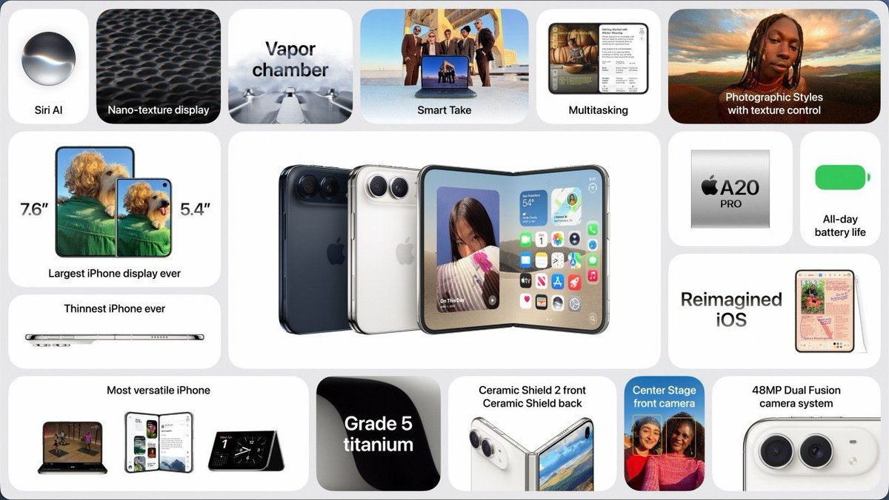
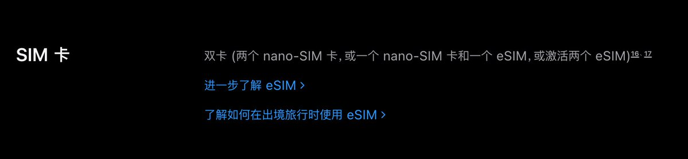

奶昔🥤
@realNyarime
可惜国行iPhone的eSIM带地理围栏，其次就是一些以往的策略，比如Apple智能的Siri用不了
那些外挂卡托，比如eSTK等都只能应付QR添加eSIM，那会有个朋友国行17e实体卡放BeeSIM，把手机自带的eSIM写俩国内卡
最后扯个题外话，折叠iPhone的命名感觉在抄微软的Surface Duo，跟Air一样纯eSIM且无激光雷达


Vincent Yang
@m1ssuo
草，国行的 iPhone 18 Pro / Pro Max 竟然有双实体卡槽 + eSIM。 https://t.co/PIGda4Tfgs https://t.co/0CrNXr8KQt